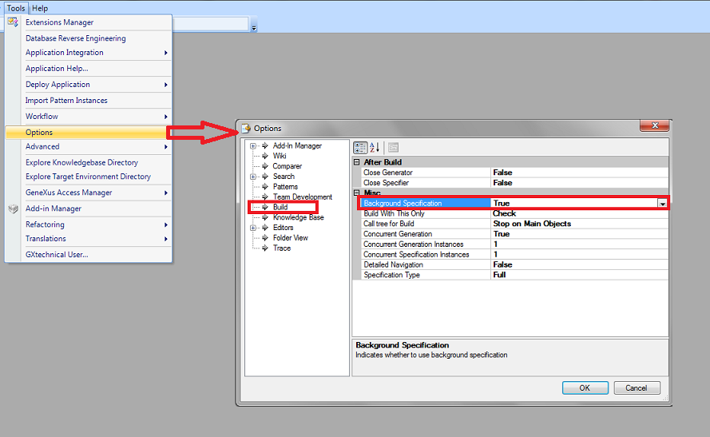

Just like other IDEs, the GeneXus IDE can anticipate the build process, using the computer's resources when they are idle (making a better use of them). To do so, the Background Specification feature is used.
This feature speeds up the building process as it enables us to specify objects when they are saved and reuse this specification in the build process.
To enable this feature set the Background Specification property to true, from the Tools -> Options -> Build menu:

When this property is enabled, it behaves as follows:
- Objects are specified after being saved.
- The specification log is shown in the output report and the navigation is added to the Last Navigation view, so specification errors and warnings can be viewed and fixed without the need for a Build - Build All.
- The resulting specification is stored and will be used to generate the object (unless the specification becomes invalid1).
- Once the Build2 process starts, all the valid specifications made in the background are reused but those invalid are remade.
| Note |
1 A background specification becomes invalid if any of the following conditions is met:
- A Reorganization is made.
- Any change is made to any property of the Knowledge Base.
|
| 2 When rebuilding, all objects belonging to the "Selected" main call tree are specified again even though they were specified in the background. |
When the Build - Build all process begins, the objects that were specified in the background will appear with a "(already specified)" mark in the specification section of the output report.
For example if the "ShowStatistics" procedure was specified in the background, the following output will be shown and the object will be generated using that specification:
========== Specification started ==========
Specifying Statistics\ShowStatistics (already specified) (1 of 1) ...
Generating Resources...Success
Specification Success
========== Default (C# Web) Generation started ==========
As of GeneXus Tilo Beta 3
Build - Build All
Options - Build
|